Shutter visual regression
PASS
parsed CollapsedChrome: {'deck_h': 88.0, 'landscape_deck_h': 80.0, 'fade_h': 48.0, 'info_bar_h': 56.0, 'hist_deck_gap': 4.0, 'hist_pad_expanded': 10.0, 'vf_to_deck_gap': 2.0}
cases: 13
expanded hist↔shutter gap: 12.0pt
collapsed hist↔deck gap: 4.0pt
landscape hist↔deck gap: 4.0pt
landscape expanded hist↔shutter gap: 12.0pt
gradient covers deck: yes
film/shader clear of bottom chrome: yes
shutter z-order above histogram: yes
film dock clears shutter: yes
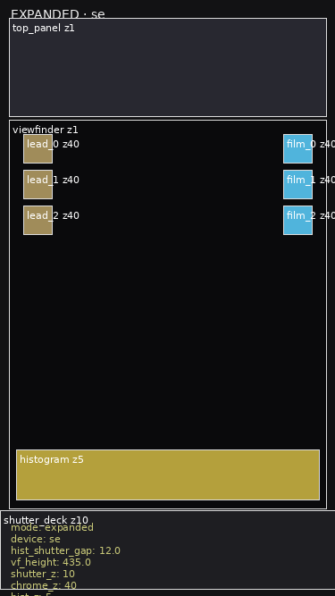
EXPANDED · se
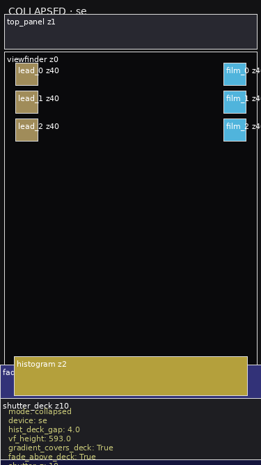
COLLAPSED · se
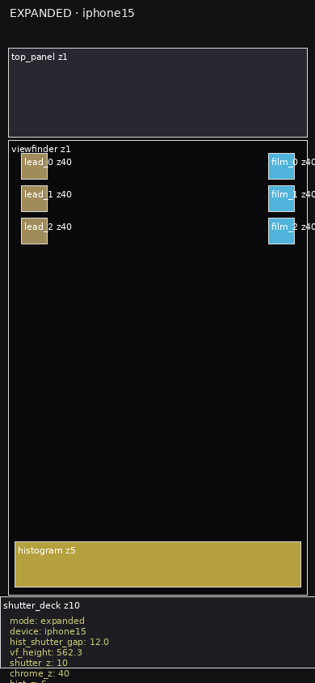
EXPANDED · iphone15
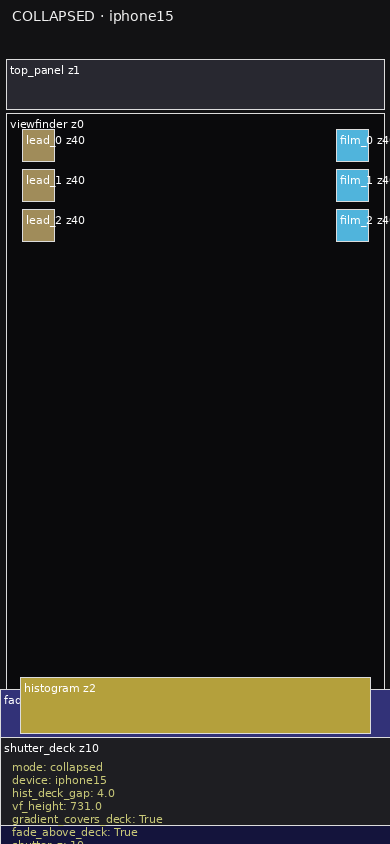
COLLAPSED · iphone15
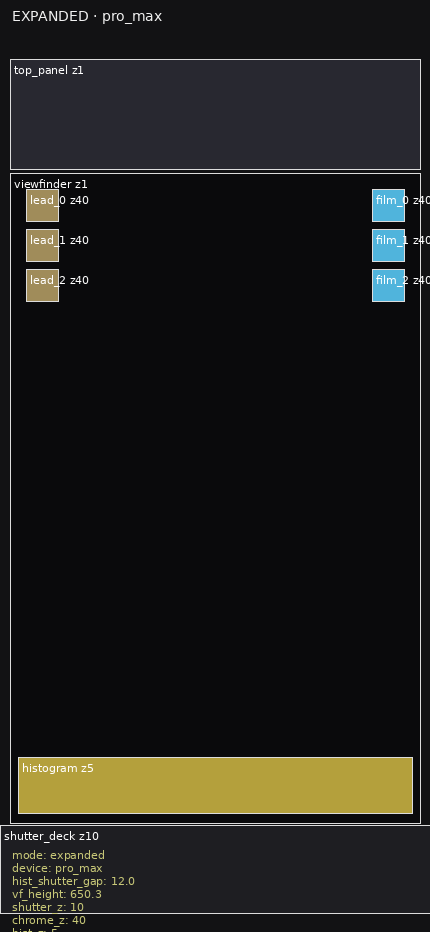
EXPANDED · pro_max
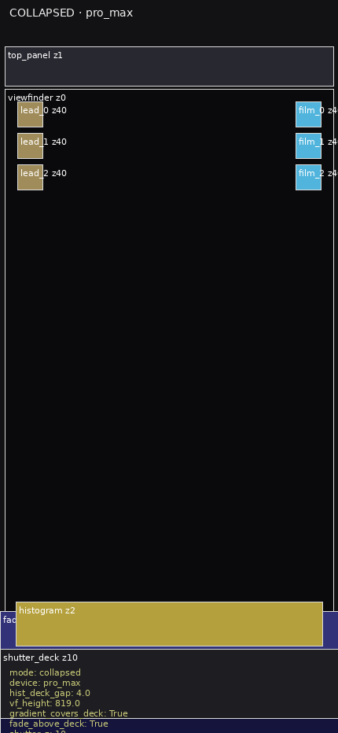
COLLAPSED · pro_max
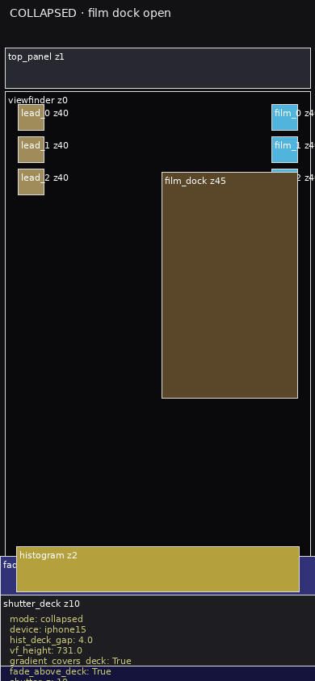
COLLAPSED · film dock open
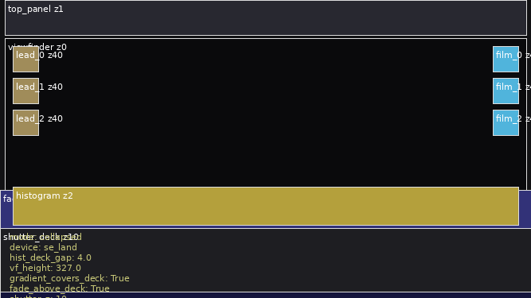
LANDSCAPE COLLAPSED · se_land
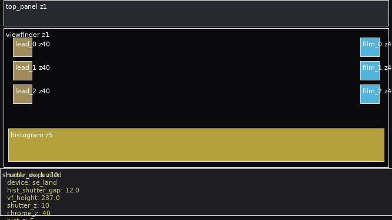
LANDSCAPE EXPANDED · se_land
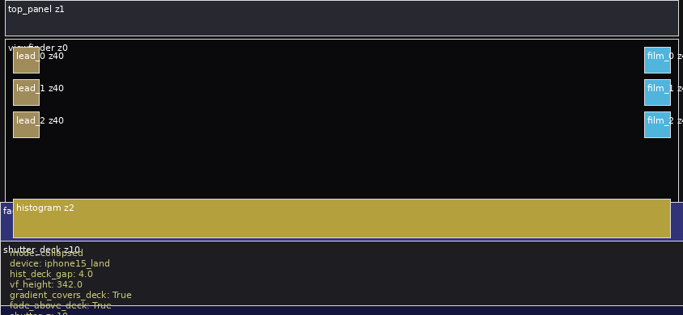
LANDSCAPE COLLAPSED · iphone15_land
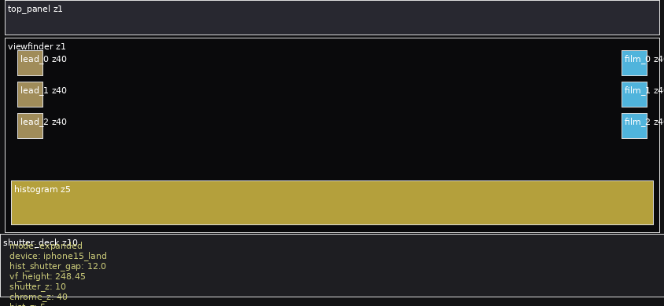
LANDSCAPE EXPANDED · iphone15_land
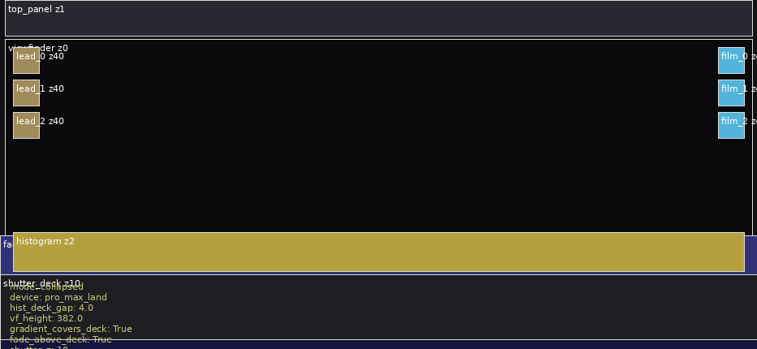
LANDSCAPE COLLAPSED · pro_max_land
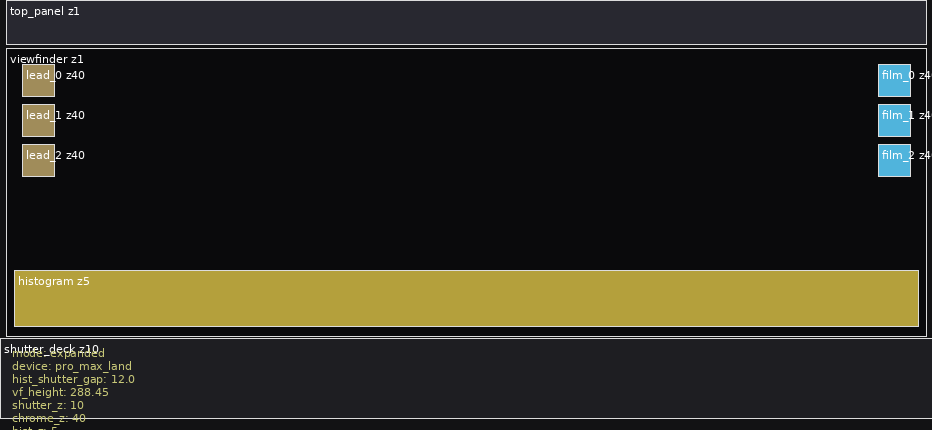
LANDSCAPE EXPANDED · pro_max_land